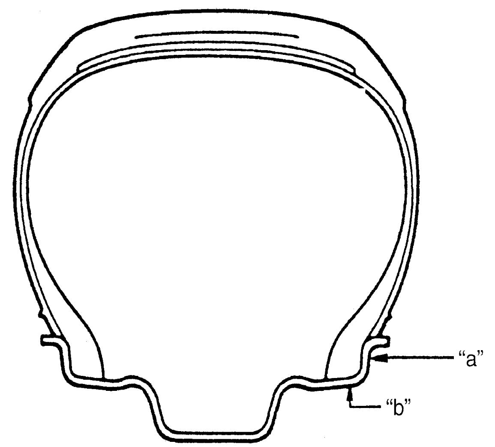

2D
| Wheel Inspection |
Wheels must be replaced if they are bent, dented, have excessive lateral or radial runout, air leakage through welds, have elongated bolt holes, if wheel bolts do not stay tight, or if they are heavily rusted. Wheels with greater runout than shown in the figure may cause objectionable vibrations.
To measure the wheel runout, it is necessary to use accurate dial indicator.
The tire may be on or off the wheel. The wheel should be installed to the wheel balancer or the like for proper measurement.
Take measurements of both lateral runout and radial runout at both inside and outside of the rim flange. With dial indicator set in place securely, turn the wheel one full revolution slowly and record every reading of the indicator.
When the measured runout exceeds the specification and correction by the balancer adjustment is impossible, replace the wheel. If the reading is affected by welding, paint or scratch, it should be ignored.
Wheel runout
| Lateral runout limit “a” | Radial runout limit “b” | |
|---|---|---|
| Steel wheel | 0.90 mm (0.035 in.) |
0.70 mm (0.027 in.) |
| Aluminum wheel | 0.30 mm (0.011 in.) |
0.30 mm (0.011 in.) |

 "Expand image")